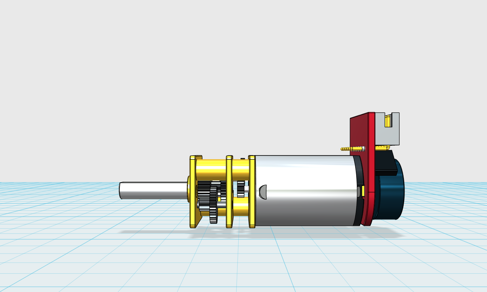
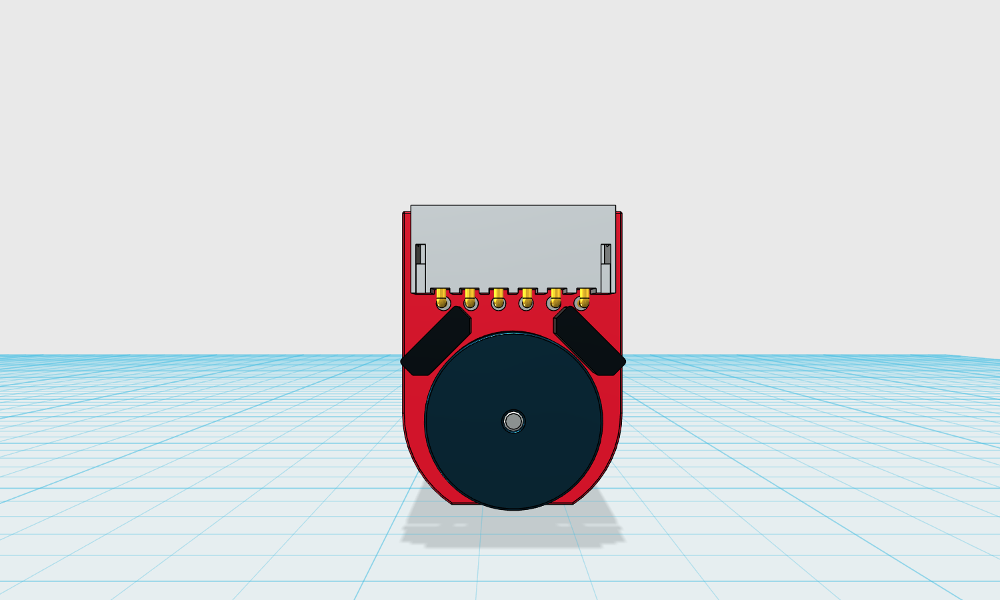
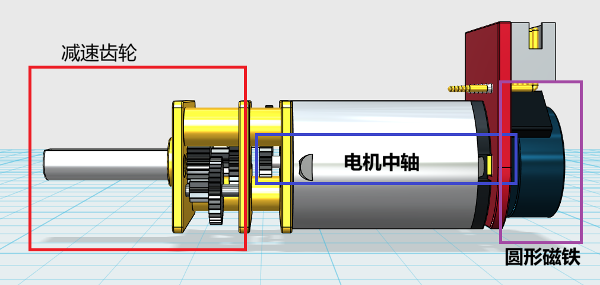
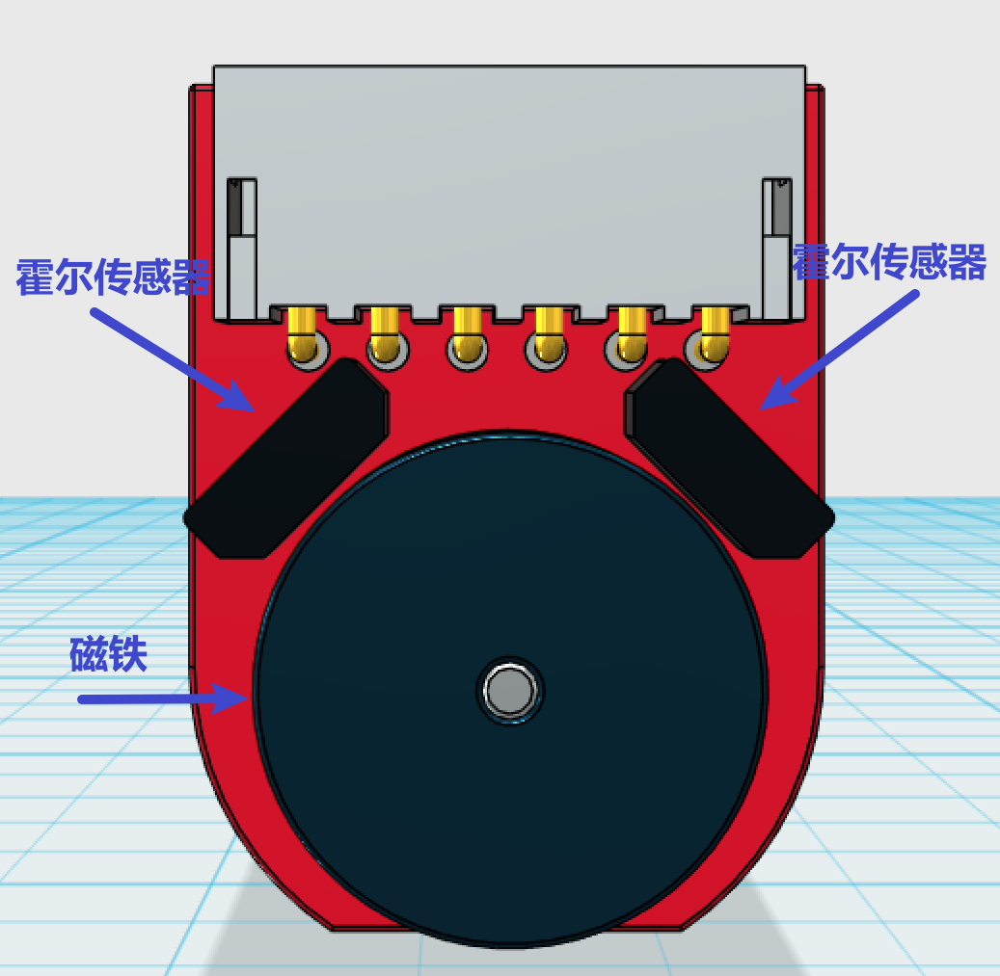
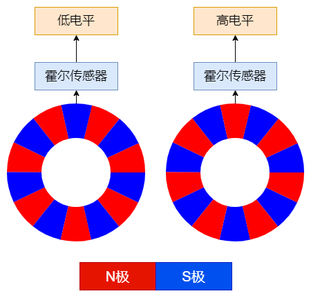
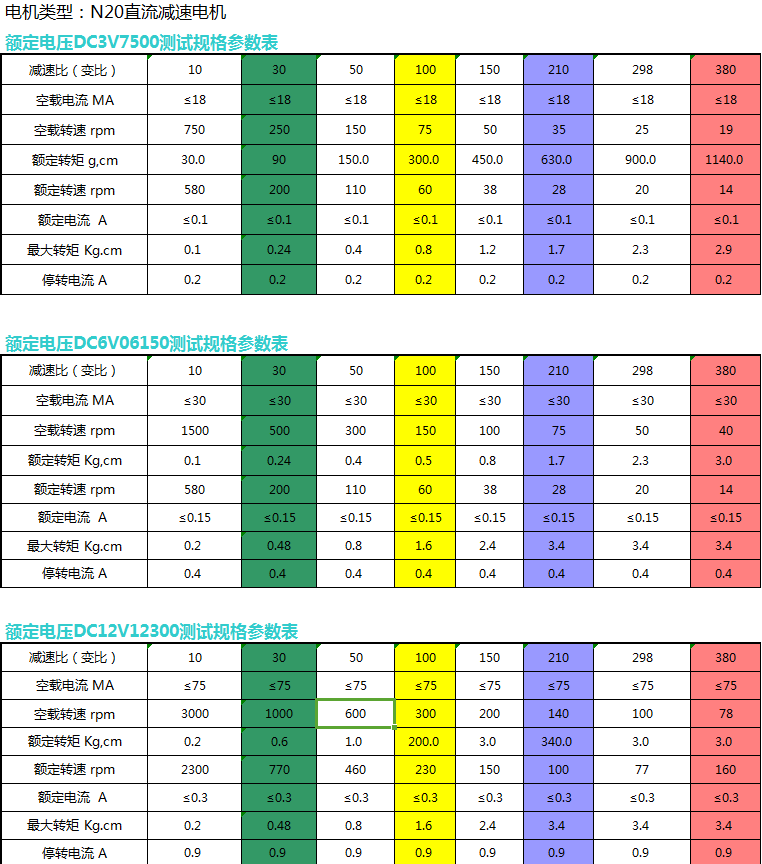
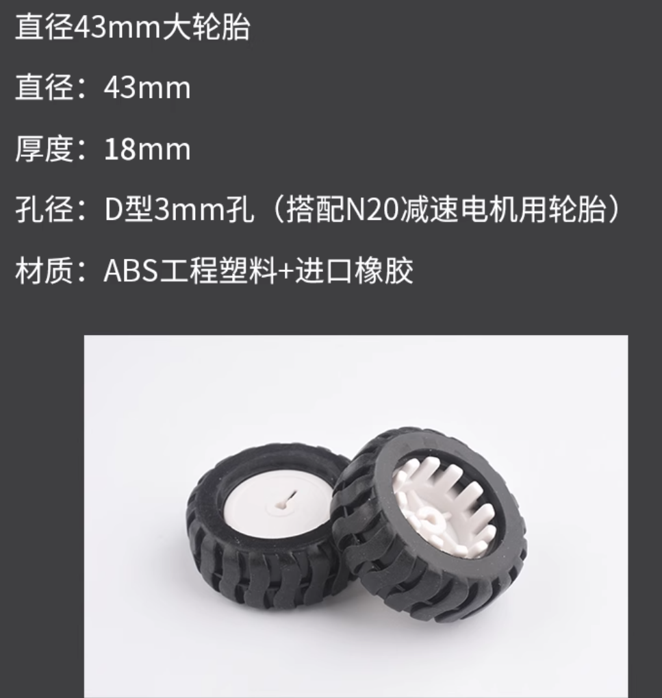
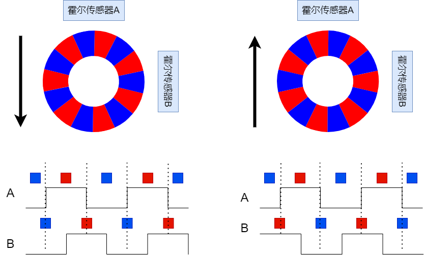

<!DOCTYPE lake>
<h2 data-lake-id="ZFGdD" id="ZFGdD"><span data-lake-id="u361db720" id="u361db720">学习目标</span></h2><ol list="u5634ad47"><li data-lake-id="u5107e2ba" fid="ubbe095db" id="u5107e2ba"><span data-lake-id="u46b1badd" id="u46b1badd">了解编码器的构成</span></li><li data-lake-id="u461fd9a8" fid="ubbe095db" id="u461fd9a8"><span data-lake-id="u93365d40" id="u93365d40">理解编码器采样原理</span></li><li data-lake-id="u247c7703" fid="ubbe095db" id="u247c7703"><span data-lake-id="u96118225" id="u96118225">掌握编码器获取转速信息</span></li></ol><h2 data-lake-id="gJggI" id="gJggI"><span data-lake-id="ud6caffe1" id="ud6caffe1">学习内容</span></h2><h3 data-lake-id="GoAqx" id="GoAqx"><span data-lake-id="u6f6cf6b7" id="u6f6cf6b7">编码器组成</span></h3><p data-lake-id="ud7643f07" id="ud7643f07"></p><ol list="u702cff46"><li data-lake-id="uf6237ebf" fid="u2fd99dbd" id="uf6237ebf"><span data-lake-id="u9d838d14" id="u9d838d14">左侧的减速齿轮</span></li><li data-lake-id="u3d6ca2e1" fid="u2fd99dbd" id="u3d6ca2e1"><span data-lake-id="u74977094" id="u74977094">中间的电机部分</span></li><li data-lake-id="ubd949d37" fid="u2fd99dbd" id="ubd949d37"><span data-lake-id="u689f9d12" id="u689f9d12">右侧的电路板</span></li></ol><h4 data-lake-id="N8S8X" id="N8S8X"><span data-lake-id="ue122b9fa" id="ue122b9fa">减速齿轮</span></h4><p data-lake-id="ud2f9d514" id="ud2f9d514"><span data-lake-id="u8587d9b6" id="u8587d9b6">将电机转速通过齿轮按照一定比例进行降速。</span></p><h4 data-lake-id="BcdNX" id="BcdNX"><span data-lake-id="ube127460" id="ube127460">电路板</span></h4><p data-lake-id="u60142162" id="u60142162"></p><p data-lake-id="u161d0d2a" id="u161d0d2a"><span data-lake-id="u58eb74ba" id="u58eb74ba">电路板中，包含了一个圆形磁体，还有两个霍尔传感器。</span></p><p data-lake-id="ua003d1da" id="ua003d1da"><span data-lake-id="u394a32b3" id="u394a32b3">电机转动时，圆形的磁体会同步进行转动，</span></p><h4 data-lake-id="pWbdQ" id="pWbdQ"><span data-lake-id="u643277bb" id="u643277bb">传动过程</span></h4><p data-lake-id="u65b72154" id="u65b72154"></p><p data-lake-id="uead8d11a" id="uead8d11a"><br/></p><ol list="u98f36c75"><li data-lake-id="u45e64b66" fid="u4a68c6d9" id="u45e64b66"><span data-lake-id="u6e8e381c" id="u6e8e381c">电机转动时，中轴会转动</span></li><li data-lake-id="ube99d8cb" fid="u4a68c6d9" id="ube99d8cb"><span data-lake-id="u3d750f24" id="u3d750f24">中轴和圆形磁铁是连在一起的，圆形磁铁也会同步转动</span></li><li data-lake-id="u00c8d4cc" fid="u4a68c6d9" id="u00c8d4cc"><span data-lake-id="u1cd8630f" id="u1cd8630f">中轴的一端和减速齿轮连接在一起，中轴转动会带动齿轮按照一定的比例进行转动(减速比)。</span></li></ol><h3 data-lake-id="eZOzQ" id="eZOzQ"><span data-lake-id="uff1c580f" id="uff1c580f">霍尔传感器</span></h3><p data-lake-id="u28b7d8cc" id="u28b7d8cc"></p><p data-lake-id="u26474ce3" id="u26474ce3"><span data-lake-id="u0cd993e7" id="u0cd993e7">开发板中包括了两个霍尔传感器，一个磁铁。</span></p><p data-lake-id="udfc46f3f" id="udfc46f3f"><span data-lake-id="u5e55e6b3" id="u5e55e6b3">磁铁是由7对N极和S极组成的。</span></p><p data-lake-id="u0f20c940" id="u0f20c940"></p><ul list="uad28c229"><li data-lake-id="u9e965714" fid="u82362261" id="u9e965714"><span data-lake-id="ub6fb07ee" id="ub6fb07ee">当电机转动时，磁铁也转动。</span></li><li data-lake-id="u100bc1c3" fid="u82362261" id="u100bc1c3"><span data-lake-id="ub02dea05" id="ub02dea05">当磁铁的N极正对霍尔传感器时，霍尔传感器会将这个信号转化为高电平。</span></li><li data-lake-id="u11547a6a" fid="u82362261" id="u11547a6a"><span data-lake-id="u80f75d85" id="u80f75d85">当磁铁的S极正对霍尔传感器时，霍尔传感器会将这个信号转化为低电平。</span></li><li data-lake-id="u503cce0f" fid="u82362261" id="u503cce0f"><span data-lake-id="u18804e3b" id="u18804e3b">通过记录高低电平变换次数，可以得到电机中轴转动的速度。</span></li></ul><h3 data-lake-id="GHW9P" id="GHW9P"><span data-lake-id="u507b5d67" id="u507b5d67">重要的概念名称</span></h3><h4 data-lake-id="T1hKm" id="T1hKm"><span data-lake-id="u1e1ab8f9" id="u1e1ab8f9">减速比和额定转速</span></h4><p data-lake-id="u1d92cc16" id="u1d92cc16"><span data-lake-id="udff3473a" id="udff3473a">以下是以N20电机为例，N20的规格参数，其中我们关注额定转速和减速比。</span></p><p data-lake-id="u21f24ab1" id="u21f24ab1"></p><p data-lake-id="u73fa367f" id="u73fa367f"><strong><span class="lake-fontsize-10" data-lake-id="ub9e9acba" id="ub9e9acba">额定转速</span></strong><span class="lake-fontsize-10" data-lake-id="u7fc573bf" id="u7fc573bf">：</span><span data-lake-id="u3707e4b5" id="u3707e4b5">rpm，全称</span><code data-lake-id="u4ebfdc8d" id="u4ebfdc8d"><span class="lake-fontsize-10" data-lake-id="ub29143a2" id="ub29143a2" style="color: rgb(51, 51, 51)">Revolutions Per Minute</span></code><span class="lake-fontsize-10" data-lake-id="u90c1c668" id="u90c1c668" style="color: rgb(51, 51, 51)">,每分钟转动的圈数，说的时末端连接轴的转速。</span></p><p data-lake-id="udfebc326" id="udfebc326"><strong><span class="lake-fontsize-10" data-lake-id="ue7258a43" id="ue7258a43" style="color: rgb(51, 51, 51)">减速比</span></strong><span class="lake-fontsize-10" data-lake-id="uf8d64dbd" id="uf8d64dbd" style="color: rgb(51, 51, 51)">：电机中轴连接了齿轮，当中轴转动时，齿轮随着中轴转动而转动，最终传导到末端连接轴。末端连接轴的速度，被减速齿轮降低了，末端连接轴和中轴的速度比就是减速比。例如rpm为300，减速比为50，那么电机中轴的转速为300*50 = 15000转/分</span></p><h4 data-lake-id="R6F2H" id="R6F2H"><span data-lake-id="u0b78180d" id="u0b78180d">轮子行进速度</span></h4><p data-lake-id="u037fb198" id="u037fb198"></p><p data-lake-id="u2fa10360" id="u2fa10360"><span data-lake-id="u3f859d40" id="u3f859d40">我们知道，</span><code data-lake-id="u0e2d74c8" id="u0e2d74c8"><span data-lake-id="u1cc719ce" id="u1cc719ce">速度=距离/时间</span></code></p><p data-lake-id="u5b50b62b" id="u5b50b62b"><span data-lake-id="u2bb6b585" id="u2bb6b585">轮子是和末端连接轴连接在一起的，RPM为300时，轮子1分钟可以转300圈，那轮子可以走过的距离我们是可以求出来的。</span></p><p data-lake-id="u1d56004a" id="u1d56004a"><span data-lake-id="ue332fc48" id="ue332fc48">转一圈，就是轮子的一个周长，</span><a class="yuque-card-link" href="https://cdn.nlark.com/yuque/__latex/55453f5a4daff83c48137717dee86105.svg" rel="noopener noreferrer" target="_blank">math：math</a></p><p data-lake-id="u77c3fde6" id="u77c3fde6"><span data-lake-id="u1f9c652c" id="u1f9c652c">因此，在RPM为300时，轮子的速度为 300(rpm) x 43mm(直径) x π / 60</span></p><p data-lake-id="uba126043" id="uba126043"><span data-lake-id="uab26883f" id="uab26883f">得出结果为 675.442409 mm/s，换算下来差不多为 0.6到0.7米/秒</span></p><p data-lake-id="ua9e1247c" id="ua9e1247c"><span class="lake-fontsize-10" data-lake-id="u1c6fddaa" id="u1c6fddaa">​</span><br/></p><h3 data-lake-id="RBjR8" id="RBjR8"><span data-lake-id="u9bbfe72f" id="u9bbfe72f">霍尔传感器采样</span></h3><p data-lake-id="uacef9320" id="uacef9320"></p><p data-lake-id="u29a8edfe" id="u29a8edfe"><span data-lake-id="ud165f137" id="ud165f137">两个霍尔传感器加上磁铁，可以测出电机的转速和方向。</span></p><ul list="uc501ac92"><li data-lake-id="ua34e7891" fid="u7c776716" id="ua34e7891"><span data-lake-id="u5f7764c4" id="u5f7764c4"> 当A传感器是上升沿时，如果B此时为低电平，那么就是反转。</span></li><li data-lake-id="u39fdeaa2" fid="u7c776716" id="u39fdeaa2"><span data-lake-id="ub9e8e040" id="ub9e8e040"> 当A传感器是上升沿时，如果B此时为高电平，那么就是正转。</span></li><li data-lake-id="ua3ed6149" fid="u7c776716" id="ua3ed6149"><span data-lake-id="ud28eb9e6" id="ud28eb9e6">产生一次上升沿或者下降沿，就记一次数，通过时间就可以测出当前的转速了。</span></li></ul><p data-lake-id="u9eea254e" id="u9eea254e"><span data-lake-id="ub237ff6a" id="ub237ff6a">​</span><br/></p><p data-lake-id="u6f373af6" id="u6f373af6"><span data-lake-id="u00ddde94" id="u00ddde94">对于霍尔采样，我们可以通过外部中断方式进行实现，代码如下：</span></p><span class="yuque-card-unsupported">[codeblock]</span><p data-lake-id="u06e11db3" id="u06e11db3"><br/></p><h3 data-lake-id="hf5YC" id="hf5YC"><span data-lake-id="u68939aa6" id="u68939aa6">正交编码</span></h3><p data-lake-id="u7687411a" id="u7687411a"><span data-lake-id="u7eca4649" id="u7eca4649">正交编码是一种用于测量旋转位置或速度的技术。它通常涉及到两个相位差90度的信号（A相和B相）。这两个信号通过光电传感器、磁性传感器或其他位置传感器生成。正交编码的主要原理是通过检测A相和B相信号的相对相位变化来确定旋转的方向和步数。</span></p><ol list="u6514e964"><li data-lake-id="ub66c7797" fid="u2a378cab" id="ub66c7797"><strong><span data-lake-id="ua4f8365b" id="ua4f8365b">A相和B相信号</span></strong><span data-lake-id="udeb794b5" id="udeb794b5">： A相和B相信号是两个相位差90度的正弦波形或方波形。这两个信号的变化在旋转方向上具有差异。</span></li><li data-lake-id="u79998cba" fid="u2a378cab" id="u79998cba"><strong><span data-lake-id="u5c44ddce" id="u5c44ddce">相位关系</span></strong><span data-lake-id="u58e2660d" id="u58e2660d">： 如果A相先于B相发生变化，系统会认为是顺时针旋转；如果B相先于A相发生变化，系统会认为是逆时针旋转。通过检测这两个信号的相对相位变化，可以确定旋转的方向。</span></li><li data-lake-id="u561dd9d4" fid="u2a378cab" id="u561dd9d4"><strong><span data-lake-id="u4510fd4e" id="u4510fd4e">脉冲计数</span></strong><span data-lake-id="u5b2493e2" id="u5b2493e2">： 在正交编码器中，每个脉冲表示一个步进。通过计数脉冲的数量，可以确定旋转的总步数。</span></li><li data-lake-id="uc5c9261b" fid="u2a378cab" id="uc5c9261b"><strong><span data-lake-id="u7c3bf1e3" id="u7c3bf1e3">增量式测量</span></strong><span data-lake-id="u281d66ab" id="u281d66ab">： 正交编码器提供的是增量式的测量，而不是绝对位置。为了得到绝对位置，通常需要在系统启动时将编码器归零，然后开始测量。</span></li></ol><p data-lake-id="ua01c4f64" id="ua01c4f64"><span data-lake-id="uc34d9e85" id="uc34d9e85">​</span><br/></p><p data-lake-id="u5ef2a2c9" id="u5ef2a2c9"><span data-lake-id="u761d237c" id="u761d237c">当前的电机测速传感器满足这种结构和表现。</span></p><p data-lake-id="uf3d39ac5" id="uf3d39ac5"><span data-lake-id="u12c0747c" id="u12c0747c">​</span><br/></p><p data-lake-id="u94268b03" id="u94268b03"><span data-lake-id="uc0fc6caf" id="uc0fc6caf">在GD32中，配置正交编码如下：</span></p><span class="yuque-card-unsupported">[codeblock]</span><p data-lake-id="u9024116a" id="u9024116a"><span data-lake-id="uad9c6294" id="uad9c6294">对于正交编码采样逻辑如下:</span></p><span class="yuque-card-unsupported">[codeblock]</span><p data-lake-id="u095853c0" id="u095853c0"><br/></p><h2 data-lake-id="XqCtr" id="XqCtr"><span data-lake-id="u6d199751" id="u6d199751">练习</span></h2><ul list="u1cc99a4d"><li data-lake-id="u0d3ddd34" fid="u1727ef8f" id="u0d3ddd34"><span data-lake-id="u881c7136" id="u881c7136">能够读取轮子转速</span></li></ul>